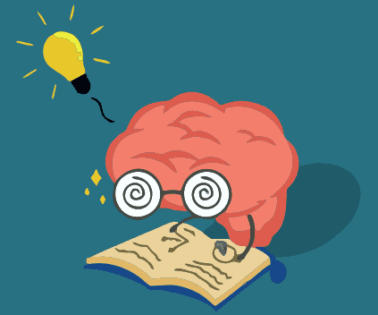

La ficción es uno de los géneros literarios más populares en todo el mundo. Desde novelas clásicas hasta obras contemporáneas, este género ofrece a los lectores la oportunidad de sumergirse en mundos imaginarios, explorar narrativas envolventes y conectarse con personajes únicos. Ya sea fantasía, ciencia ficción, o realismo mágico, la ficción invita a los lectores a escapar de la realidad por un momento y disfrutar de historias llenas de emociones y aventuras.
La no ficción es un género elegante y majestuoso que se enfoca en hechos reales y eventos históricos. Los libros de no ficción ofrecen una visión profunda de diversos temas como la historia, la ciencia, la política, y la filosofía, proporcionando a los lectores conocimientos valiosos y puntos de vista informados. Este género es una excelente opción para aquellos que buscan aprender y ampliar su comprensión del mundo que los rodea.
Los libros de autoayuda están diseñados para inspirar y empoderar a los lectores. Este género ofrece consejos prácticos para mejorar varios aspectos de la vida personal, desde las relaciones hasta el bienestar emocional y la productividad. Estos libros son una fuente de amor y felicidad, ya que invitan a los lectores a reflexionar sobre su crecimiento personal y les brindan herramientas para superar desafíos y alcanzar sus metas.
